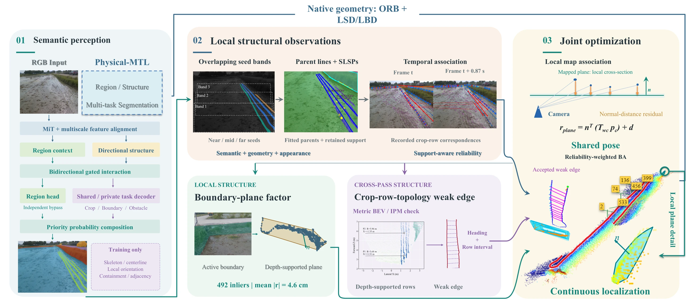

I extend ORB-SLAM3 with task-specific semantic and geometric observations for continuous localization in repetitive paddy-field layouts.
Semantic perception and feature association
Physical-MTL predicts crop rows and field boundaries. Stereo depth and geometric screening convert semantic masks into finite structural observations. A custom semantic–geometric line descriptor integrates LBD appearance, semantic identity, orientation, spatial offset, mask support and observation reliability to support association while retaining useful conventional feature matches.
Reliability-weighted geometric optimization
Semantic line support points (SLSP) sampled from parent lines form point-to-line residuals. Parent-line reliability weighting bounds the cumulative influence of correlated samples. Local boundary-plane factors and cross-pass topological constraints supplement observations during turns and row re-entry, with a low-weight longitudinal relative-position constraint.
Real-field evaluation
Comparative and staged ablation experiments cover three real stereo/IMU field sequences, using RTK only as an evaluation reference. Metrics include absolute and relative trajectory error, tracking continuity, map resets and post-turn heading. In one challenging sequence, the proposed method maintained 99.6% tracking coverage without a map reset.